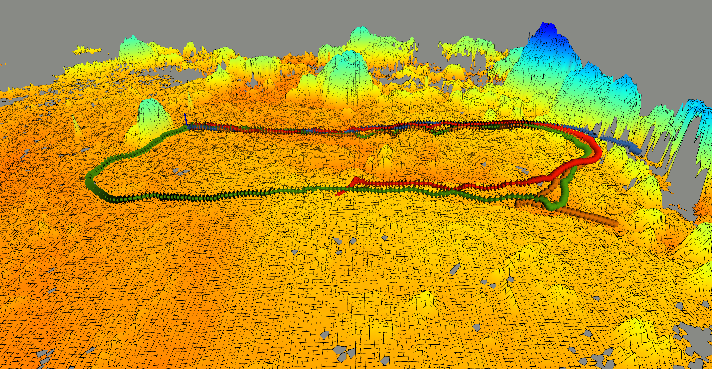
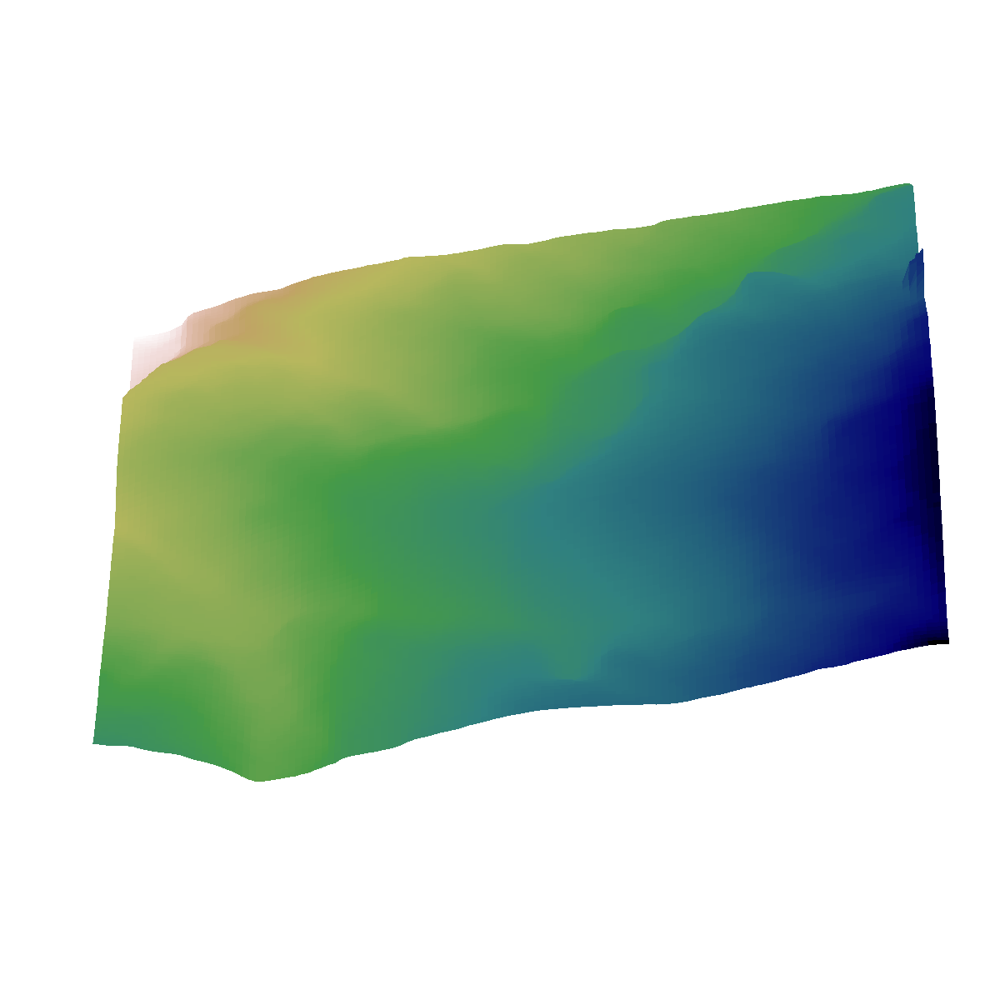
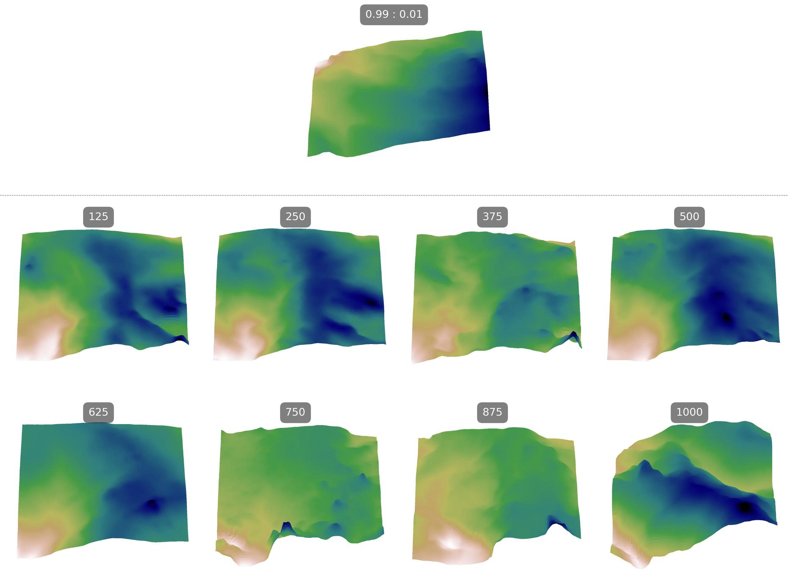
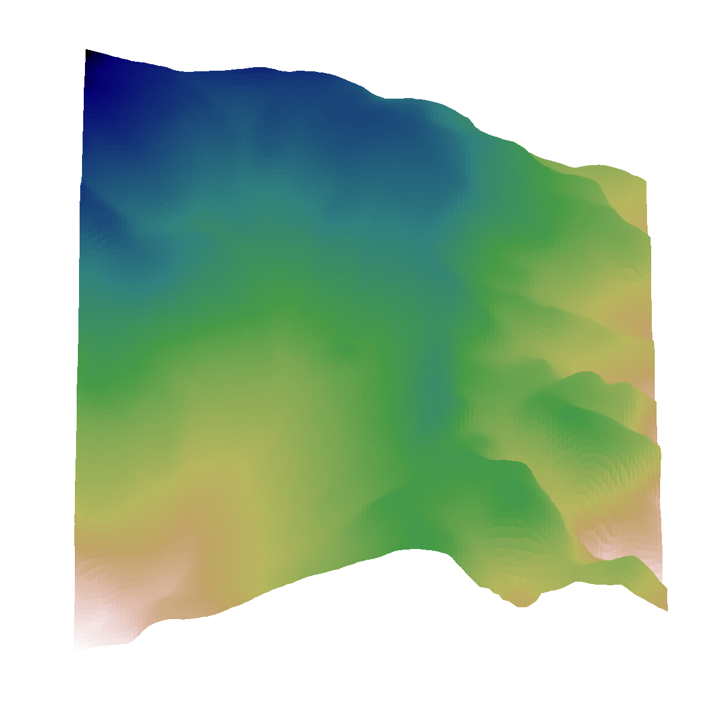

Model-free reinforcement learning has emerged as a powerful method for developing robust robot control policies capable of navigating through complex and unstructured terrains. The effectiveness of these methods hinges on two pivotal elements: (1) the use of massively parallel physics simulations to expedite policy training, and (2) the deployment of an environment generator tasked with crafting terrains that are sufficiently challenging yet attainable, thereby facilitating continuous policy improvement. Existing methods to environment generation often rely on heuristics constrained by a set of parameters, limiting the diversity and realism.
In this work, we introduce the Adaptive Diffusion Terrain Generator (ADTG), a novel method that leverages Denoising Diffusion Probabilistic Models (DDPMs) to dynamically expand an existing training environment by adding more diverse and complex terrains tailored to the current policy. Unlike conventional methods, ADTG adapts the terrain complexity and variety based on the evolving capabilities of the current policy. This is achieved through two primary mechanisms: First, by blending terrains from the initial dataset within their latent spaces using performance-informed weights, ADTG creates terrains that suitably challenge the policy. Secondly, by manipulating the initial noise in the diffusion process, ADTG seamlessly shifts between creating similar terrains for fine-tuning the current policy or entirely novel ones for expanding training diversity. Our experiments show that the policy trained by ADTG outperforms procedural generated and natural environments, along with competing navigation methods.
Adaptive difficulty (top): the contributions of easy and hard samples are re-weighted so generated terrains match the RL policy's current performance. Adaptive diversity (bottom eight): moving the forward diffusion step K from low to high (with 0.5 × easy + 0.5 × hard) moves from close variations to entirely new terrains. Drag the slider.

Easy Environment


Hard Environment
Videos are sped up to 15 seconds, so the robot speeds do not align.
@inproceedings{
yu2025adept,
title={{ADEPT}: Adaptive Diffusion Environment for Policy Transfer Sim-to-Real},
author={Youwei Yu and Junhong Xu and Lantao Liu},
booktitle={RSS 2025 Workshop on Resilient Off-road Autonomous Robotics},
year={2025},
url={https://openreview.net/forum?id=tdgQT1SynU}
}@inproceedings{
yu2024adaptive,
title={Adaptive Diffusion Terrain Generator for Autonomous Uneven Terrain Navigation},
author={Youwei Yu and Junhong Xu and Lantao Liu},
booktitle={8th Annual Conference on Robot Learning},
year={2024},
url={https://openreview.net/forum?id=xYleTh2QhS}
}